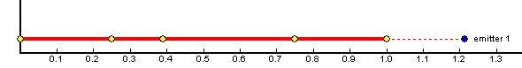
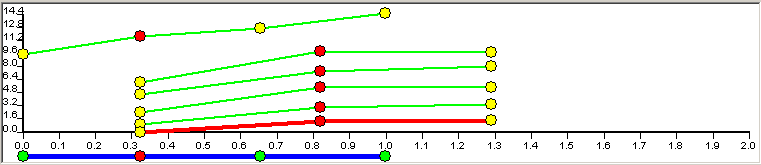

1. Меню
|
|
Открыть файл проекта |
|
|
Сохранить файл проекта |
|
|
Сохранить файл проекта под другим именем |
|
|
Загрузить эффект из файла игрового формата |
|
|
Добавить к текущим эффектам эффект из файла игрового формата |
|
|
Сохранить активный эффект в файл игрового формата. |
|
|
Отменить последнее действие. |
|
|
Повторить ранее отмененное действие. |
|
|
Загрузить мир |
|
|
Режим вращения фигуры начального положения частиц. |
|
|
Режим редактирования позиции точек активного эмиттера. |
|
|
Режим редактирования точек сплайна. |
|
|
Режим вращения фигуры распределения скорости. |
|
|
Изменяет размер активного 3D окна. |
|
|
Устанавливает камеру активного 3D окна на текущий центр. |
|
|
Режим цели. Курсор мыши является целью. Применим для типов эмиттера: Столб света и молнии. |
|
|
Выбор цвета фона 3D окна. |
2. Дерево эмиттеров

Расположено в верхнем левом окне.
На верхнем уровне дерева находятся группы содержащие эффекты. Вид эффекта зависит от его эмиттеров и их порядка.
Все имена можно менять кликнув дважды с паузой на требуемое поле.
Порядок редактируется перетаскиванием.
Для создания копии эмиттера нужно перетащить его в требуемый эффект удерживая Ctrl.
При перетаскивании происходит автоматическая прокрутка окна и нажатие правой кнопки мышки будет либо раскрывать, либо закрывать текущий узел дерева.
В любой момент времени существует активный эффект который можно экспортировать. Чтобы редактировать какой-либо эмиттер нужно выделить его, при этом активизируется соответствующий эффект.
Всплывающее меню
New |
Создание нового объекта. Он будет вставлен в соответсвующий активный узел |
Delete |
Удаление активного объекта нижнего уровня. Нельзя удалить последний объект узла. |
Set 3D Model |
Связывает 3D модель с активным эффектом. Если у какого-либо эмитера активного эффекта установлено распределение по 3DModel, то поверхность 3D модели будет установлена в этом эмитере как поверхность излучения частиц. 3D модель можно загрузить также в эмитер с распределением по 3DModelInside. |
Show 3D Model |
Показ связаной с активным эффектом 3D модели. |
Visible Groups
|
Позволяет выбрать группу видимости у связанной 3D модели. Этот пункт меню появляется только после того, как будет связана модель с эффектом.(Set 3D Model). |
Set 3D Background |
Связывает 3D модель с активным эффектом. В отличии от Set 3D Model не влияет на эмитеры эффекта. |
Show 3D Background |
Показ связаной с активным эффектом фоновой 3D модели. |
3. Окно параметров
Находится в нижнем левом окне.
Параметры разделены на два списка. Доступ к ним осуществляется кнопками
вверху окна. Цифры
после "fps" показывают текущий
fps, после "N" текущее количество
треугольников, после "S" текущую суммарную площадь. Для
редактирования цифровых параметров нужно выделить окно и затем, либо не
отпуская левую кнопку мышки двигать курсор по вертикальной оси, либо кликнуть
по окну еще раз и вручную ввести значение.
Цифры
после "fps" показывают текущий
fps, после "N" текущее количество
треугольников, после "S" текущую суммарную площадь. Для
редактирования цифровых параметров нужно выделить окно и затем, либо не
отпуская левую кнопку мышки двигать курсор по вертикальной оси, либо кликнуть
по окну еще раз и вручную ввести значение.
Первый список.
Сетка |
Отображать/не отображать сетку |
Мир |
Отображать/не отображать мир |
Р |
Этот параметр влияет на количество частиц. Он не записывается в эффект. Он нужен только для того, чтобы художник мог увидеть, как будет выглядеть эффект в игре при различных настройках. При нормальных настройках в игре P=100, при минимальных P=30. |
Показать |
При поднятом флаге показывается поверхность выпуска частиц. Эта поверхность задается параметром "Распределение". |
Blending |
В раскрывающемся списке выбирается метод накладывания частиц эмиттера. |
Распределение* |
Задание поверхности на которой
случайным образом будут появляться частицы. Если выбрать 3DModel поверхность
модели связанной с эффектом будет использована. При выборе 3DModelInside
необходимо загрузить модель в эмиттер. При выборе "По эмиттеру" частица эмиттера располагается по положению случайно выбранной частицы другого эмиттера того же эффекта, задаваемого параметром "Связь". Если в некоторый момент нет ни одной частицы у указанного эмиттера, то частица появится в центре координат. К заданному направлению скорости частицы прибавляется направление скорости частицы указанного эмиттера. Если же выбрать простые поверхности, то затем нужно задать геометрию поверхности |
X, Y, Z |
Задание геометрии поверхности |
Связь |
В раскрывающемся списке выбирается нужный эмиттер или пункт "не связан" если возможность не используется. |
Заполнение |
При поднятом флаге частицы могут появляться и внутри заданной фигуры. |
Фиксировать |
При поднятом флаге частицы могут появляться только в заданных позициях. |
dx, dy, dz |
Число частиц на некоторой оси. |
Случайный кадр |
При поднятом флаге можно добавить до 10 текстур. И при генерации частиц будет использоваться одна из заданных текстур в случайном порядке. |
Текстура,Текстура1….Текстура10 |
Выбор текстуры для частиц. |
* Существуют следующие типы распределения и их настройки:
Box . (параллелепипеда)
X |
Ширина параллелепипеда |
Y
|
Длина параллелепипеда |
Z |
Высота параллелепипеда |
Cylinder. (цилиндр, конус)
Конус |
Если флаг поднят, то появляется дополнительная настройка радиус 2 |
Радиус |
Нижний радиус цилиндра/конуса |
Радиус 2 |
Верхний радиус цилиндра/конуса (только для конуса) |
Высота |
Высота цилиндра/конуса |
Ставить на дно |
Перемещать центр цилиндра/конуса на нижнее основание |
Sphere. (сфера)
X – Радиус сферы
Line (линия)
X – Длинна линии.
Ring (сектор сферы)
X
|
Радиус |
Alpha min
|
Минимальный угол Alpha |
Alpha max
|
Максимальный угол Alpha |
Teta min
|
Минимальный угол Teta |
Teta max
|
Максимальный угол Teta |
3D Model
Распределение по модели связанной с эффектом. Данная модель задается в игре и эффект распределяется по этой модели.
3D Model Inside
Распределение по модели связанной с активным эмиттером. Эта модель в отличии от 3D Model задается пользователем создающим эффект и хранится внутри эффекта. Эмиттер с которым связана модель распределяется по ней и не зависит от той модели которая задается в игре. Для каждого эмиттера может задаваться своя модель.
По эмиттеру
Распределение по другому эмиттеру.
Второй список.
Освещение - Поднятие флажка включает освещение частиц эмиттера
Эмиттер - В этом разделе перечислены параметры эмиттера. В данной таблице приведены основные параметры для типа эмиттере – базовый, специфичные параметры для других типов эмиттера приведены ниже, отдельною
Тип |
В раскрывающемся списке перечислены возможные типы эмиттера. Для различных типов доступны различные возможности:
|
|
Количество точек |
В течении своей жизни эмиттер может передвигаться по заданным точкам. Для каждой точки задается время в которое эмиттер должен прийти в эту точку. Изначально в эмиттере заданна только одна точка (со временем прихода 0). При изменении числа точек эмиттера в поле редактирования времена для каждой точки задаются автоматически. Однако если число точек станет две и более в окне графиков появится синия линия внизу. Длина этой линии будет соответствовать времени жизни эмиттера. На линии будут присутствовать точки которые можно перемещать по временной шкале таким образом задавая времена прихода эмиттера в эти точки. |
|
Время жизни |
Время жизни эмиттера |
|
Кол-во частиц |
При поднятии флага в окне графиков виден график зависимости кол-ва частиц от времени, с помощью него удобней редактировать данный параметр. В поле редактирования задается число частиц которые выпускает эмиттер при достижении редактируемой точки эмиттера. Если поднят флаг "Непрерывно", то в данном поле редактирования задается скорость выпуска частиц. |
|
Непрерывно |
При поднятом флаге генерация частиц будет происходить непрерывно. |
|
Зациклить |
При поднятом флаге эмиттер в конце жизни переходит в начальное состояние. |
|
Сквозь землю |
При поднятом флаге частицы не отсекаются землей. |
|
Жесткая привязка |
При поднятом флаге осуществляется жесткая привязка частиц к перемещению эффекта. |
|
Сносится ветром |
При поднятии флага координаты частиц эмиттера будут передвигаться вместе с эффектом, иначе не будут зависеть от движения эффекта. |
|
|
Инертность |
|
Шлейф |
При поднятии флага длина частицы будет вычисляться динамически. |
|
|
Интервал |
Задает время между первой и последней точками частицы. |
|
Гибкость |
Задает число промежуточных точек в которых частица может изогнуться. От этого параметра сильно зависит производительность(пропорционально), поэтому увеличивать его надо очень осторожно. |
Масштаб |
График изменения масштаба начальной скорости и размера в точка рождения частиц (точках эмиттера) |
|
Шум скорости. |
При поднятом флаге на начальную скорость частиц влияет шум. О настройка шума смотри ниже. |
|
Шум направления |
При поднятом флаге на начальное направление частиц влияет шум. О настройка шума смотри ниже. |
|
Разброс – параметры разброса частиц
Размер |
В окне редактирования задается коэффициент случайного отклонения от заданного размера частицы. |
Время |
В окне редактирования задается коэффициент случайного отклонения от заданного времени жизни частицы. |
Скорость |
В окне редактирования задается коэффициент случайного отклонения от заданной скорости частицы |
Ротор |
При поднятии флага частицы вращаются хаотически |
Частица – параметры поведения частиц
Скорость |
При поднятии флага в окне графиков виден график скорости частиц. Также в окне редактирования можно задать величину скорости частиц для текущего времени редактирования. |
Коэффициент скорости |
Дополнительный коэффициент для вычисления скорости частиц. При поднятии флага в окне графиков виден график. В окне редактирования задается коэффициент для текущего времени редактирования. |
Размер |
При поднятии флага в окне графиков виден график изменения размера частицы в течении ее жизни. В окне редактирования задается величина размера частицы для текущего времени редактирования |
Гравитация |
При поднятии флага в окне графиков виден график изменения гравитации по времени. В окне редактирования задается величина гравитации для текущего времени редактирования. |
Вращение |
При поднятии флага в окне графиков виден график изменения скорости вращения частицы по времени. В окне редактирования задается величина скорости вращения для текущего времени редактироания. Если тип эмиттера -
поверхность и включен флаг "Зациклить", то вращение будет
происходить плавно на любой скорости. |
Распределение |
В раскрывающемся списке выбирается метод случайного варьирования вектора скорости частицы для текущей точки редактирования. Для последней точки нет смысла выбирать распределение. По умолчанию устанавливается метод Box. Параметром "Множитель" задается коэффициент влияющий на величину вариации. В данных методах вычисляется вариационный вектор который, затем прибавляется к вектору скорости частицы. · Box - случайный вектор не выходящий за пределы некоторого куба. · Cylinder - случайный вектор не выходящий за пределы некоторого цилиндра. · Sphere - случайно направленный вектор имеющий длину равную параметру "Множитель". · Line - вектор варьируется только по оси Z. · Normal in - вектор направленный в сторону удаления от текущей позиции эмиттера и имеющий длину равную параметру "Множитель". · Normal out - вектор направленный на текущую позицию эмиттера и имеющий длину равную параметру "Множитель". · Normal in out - Случайным образом выбирается вектор полученный с помощью метода Normal in или Normal out. · Vertical - вектор, координаты x и y которого равны нулю, а координата z равна параметру "Множитель". · Normal 3D Model - вектор нормальный к 3D модели в начальной позиции частицы. · Invariable - нулевой вектор. В случае выбора методов "Normal ..." и задания параметра "Множитель" меньше нуля, будут происходить обратные эффекты. |
Дополнительные
параметры для разных типов эмиттеров:
Поверхность.
Дополнительные параметры в разделе Эмиттер
Высота |
Задает высоту расположения частиц над поверхностью земли. |
Угол |
Угол поворота частицы вокруг ее оси. В градусах. |
Центр |
При поднятии флага к углу поворота частицы добавляется угол, при котором все частицы одинаково ориентированны относительно центра эмитера. |
Поле |
Частицы ложатся не поверхность земли, а на поверхность силовиго поля. |
Плоский |
При поднятии флага частицы становятся плоскими. |
Сплайн
Если включен режим редактирования
точек эмиттера  , то в раздел Эмиттер добавляется параметр Расположение
, то в раздел Эмиттер добавляется параметр Расположение
Расположение – это пункт позволяет выбрать расположение точек сплайна:
Из списка можно выбрать «вручную» или «спираль».
Если выбран тип расположения «спираль», то появляются дополнительные настройки:
Радиус1 - радиус первого конца спирали.
Радиус2 - радиус второго конца спирали.
Высота1 - высота первого конца спирали.
Высота2 - высота второго конца спирали.
Угол - угол закручивания спирали.
Сжатие - изменяет распределение колец.
Дополнительные параметры в разделе Частица
Сплайн |
|
Движение |
|
Столб света
Дополнительные параметры в первом списке.
Анимированная текстура |
Дополнительная текстура которая может анимироваться. |
Дополнительные параметры в разделе Эмиттер
Blending текстур |
Метод накладывания текстур друг на друга. |
Плоскость |
При опущенном флаге эмиттер представляет собой цилиндр. При поднятом плоскость, всегда обращенную к камере |
Лазер |
(только если поднят флаг Плоскость)При поднятом флаге эмиттер представляет собой несколько пересекающихся плоскостей. Очень хорошо использовать для разного рода лазеров. |
Поворачиваться |
При поднятом флаге плоскость всегда будет поворачиваться «лицом» к камере |
Ширина 1 |
Ширина (диаметр) верхней части столба света |
Ширина 2 |
Ширина (диаметр) нижней части столба света |
Скорость текстуры по X
|
Скорость перемещения текстуры горизонтально |
Скорость текстуры по Y |
Скорость перемещения текстуры вертикально. |
Длинна |
Длинна столба света |
Молния
Дополнительные параметры в
разделе Эмиттер
|
Время генерации |
Время через которое генерируется новая молния |
|
Начальная ширина |
Начальная ширина молнии |
|
Время расширения |
Значение на которое увеличится начальная ширина молнии за время затухания |
|
Длина полоски |
Плотность текстуры на молнии |
|
Время затухания |
Время за которое растворится молния |
|
Амплитуда |
Амплитуда молнии |
|
Количество |
Количество молний |
Настройки Шума

Кривая шума настраивается с помощью следующих параметров:
Октавы – количество октав. Подробнее об октавах см ниже.
Частота – частота колебаний.
Амплитуда – Глобальная амплитуда.
Настройки значений амплитуды для каждой октавы – значения от глобальной амплитуда. Например если амплитуда Первой Октавы равна 0.5, то амплитуда кривой этой октавы будет половина от глобальной амплитуды, если 0.25, то четверть, и.т.д.
Справа можно видеть график получаемой кривой. Кнопка «Обновить» служит для перегенерации кривой.
Октавы:
Октава – это кривая с частотой вдвое большей чем у предыдущей октавы и заданной частотой.
При сложении всех этих кривых и получается кривая шума.
Чем меньше октав используется, тем более гладкая кривая получается.
Для каждой октавы можно настроить ее амплитуду, в начальном положении (среднее на ползунках) амплитуда каждой следующей октавы вдвое меньше амплитуды предыдущей октавы.
4. 3D Окно |
Расположенно справа сверху. 3D окно содержит в себе четыре окна - вид сверху(XY),вид сбоку(XZ и YZ) и трехмерный вид(XYZ). Любое из этих окон может быть увеличено при помощи кнопки меню. При загрузке увеличивается окно трехмерного вида.
Работа с мышкой
Для измения координат сетки нужно удерживая SHIFT кликнуть левой кнопкой в нужное место карты мира.
Для перемещения камеры удерживая SHIFT и правую кнопку мышки двигайте курсор.
Нажав и удерживая правую кнопку мыши можно вращать камеру.
Для приблежения или удаления изображения необходимо вращать колесико на мышке(соответственно от себя/на себя).
Левой кнопкой можно выбирать и пертаскивать точку(в режиме редактирования положения точки).
В режиме рактирования положений точек можно перемещать все точки сразу удерживая Ctrl(+левая кнопка мыши).
В режиме рактирования положений точек можно вращать все редактируемые точки вокруг их центра. Для этого удерживая Ctrl и правую кнопку мышки нажатыми двигать курсор в горизонтальной плоскости.
5. Окно графиков |
Расположенно справа внизу.
В окне графиков предлагается более наглядный и удобный итерфейс редактирования параметров.
Если нет активного эмитера, то в окне графиков отрисовываютя все эмитеры ативного эффекта.

График отдельного эмитера в этом случае представляет собой линию с точкой в начале и конце. Если эмитере в течении жизни перемещается по более чем двум точкам, то на линии присутствуют дополнительные точки.
Положения всех точек, кроме крайних можно редактировать перетаскиванием левой кнопкой мыши.
Длина линии соответствует времени жизни эмитера. Ее можно редактировать перетаскивая последнюю точку на линии. Время жизни эмитера это время в течении которого эмитер может быть виден на экране.
Пунктирной линеей отображается время жизни частиц. Тем самым если
сложить время жизни эмиттера и время жизни частиц (длинна пунктирной линии), то
мы получим длительность эфекта данного эмиттера.
Конец времени эффекта данного эмиттера отображается синей точкой.
Важно! Время жизни частиц отображается пунктирной линией, это
значит, что время жизни отсчитывается не от начал эмиттера (левая точка), а от
конца эмиттера. (за
исключением если в эмиттере всего одна точка)
Важно! При изменении времени жизни частиц на данном графике,
меняется время для всех точек эмиттера и устанавливается одинаковым.
Чтобы редактировать время начала работы эмитера в эффекте нужно перетаскивать первую точку на линии, либо саму линию.
Если существует активный эмитер, то в окне графиков выводятся все графики которые пользователь отметил флажками в окне параметров.

Если эмитер имеет две и более точек, то выводится синия линия внизу. На ней расположены точки эмитера. Можно редактировать времена прихода эмитера в эти точки перетаскивая их. При выделении какой-либо точки можно просмотреть ее настройки в окне параметров. Если левой кнопкой мыши щелкнуть на саму синию линию то в этом месте будет создана новая точка. Добавленная точка проинициализирует свои параметры парметрами следующей, по времени, точки.
Графики могут быть двух видов - графики параметров частиц и графики параметров самого эмитера.
Графики параметров эмитера задаются по времени жизни эмитера. В качестве примера можно посмотреть график изменения количества частиц в течении жизни эмирера (раздел "Генерация" параметр "Количество частиц").
Графики параметров частиц задаются по времени жизни частиц. В качестве примера можно посмотреть график изменения скорости в течении жизни частицы (раздел "Скорость" параметр "Скорость"). Также к этому типу графиков относятся графики параметров "Множитель" из раздела "Скорость", "Размер", "Гравитация", "Вращение" из раздела "Частица".
Если в течении жизни эмитер перемещается по точкам то, выбирая конкретную точку можно настроить время жизни частиц, когда эмитер приходит в эту точку. Чтобы изменить время жизни частиц нужно перетащить последнюю точку, на любом графике параметра частиц, в нужное положение по шкале времени.
Работа с мышкой
На всех графиках можно добавить точку редактирования щеклнув левой кнопкой мыши на линию соответствующего графика.
Удалить точку ректирования можно щелкнув правой кнопкой мыши на соответсвующей точке.
Редактируется положение точки претаскиванием.
Чтобы перетаскивать не одну точку, а все нужно пертаскивать какую-либо точку с нажатым Ctrl.
Настройка цвета частиц эмитера
Под окном графиков находятся два контрола позволяющие задавать цвет и прозрачность частиц эмитера для каждого момента их жизни.